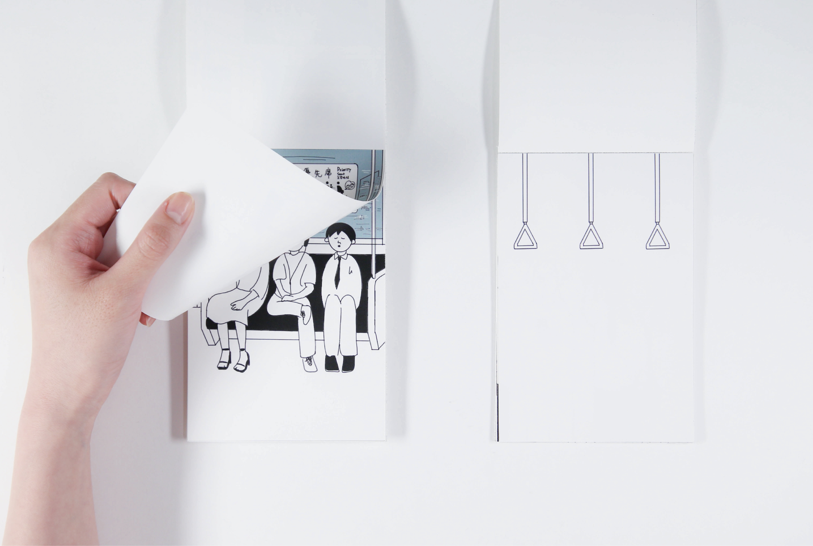
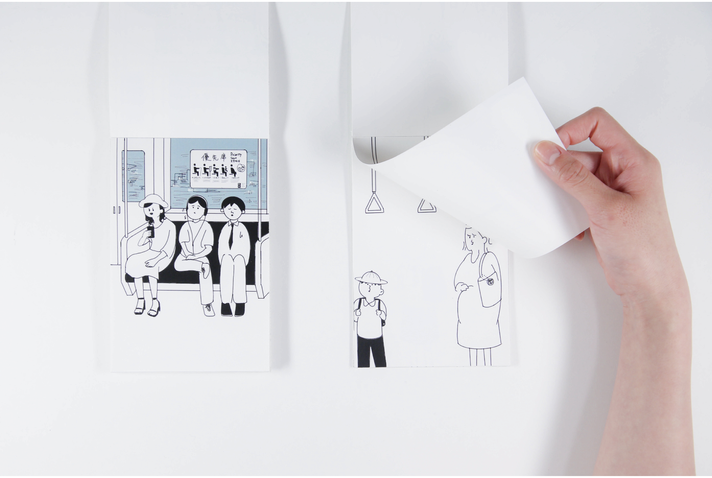
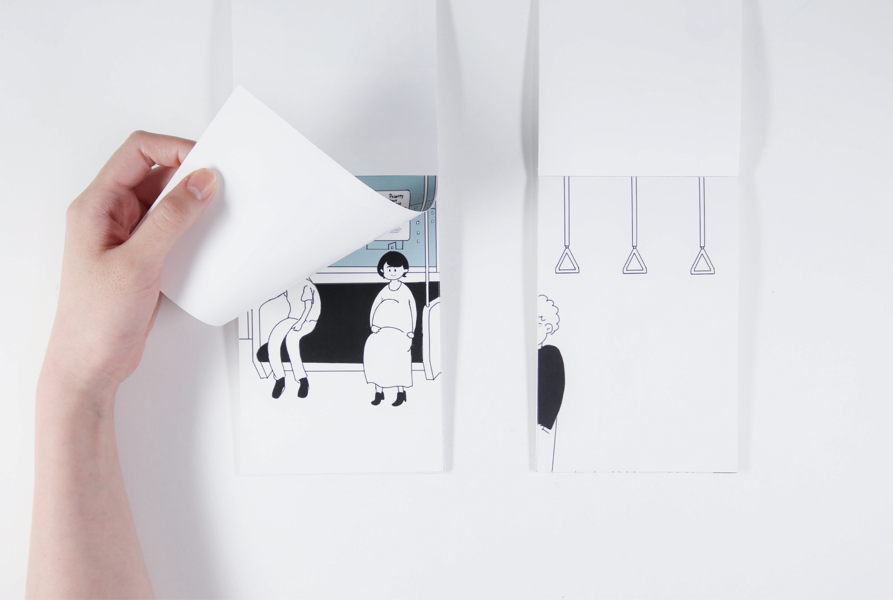
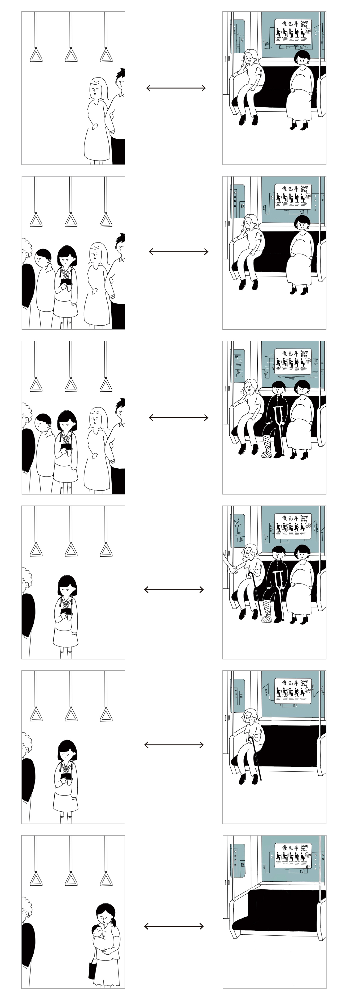
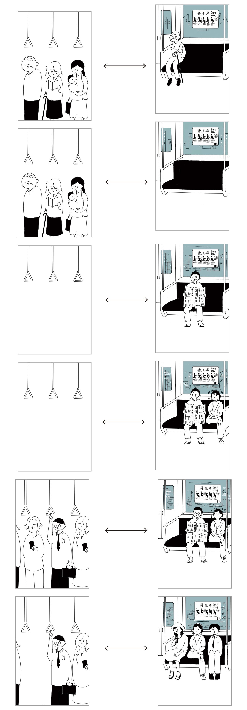

二つの冊子
2022
この作品は、二つの冊子をお互い違うページで開いてめくり進めていっても、人同士の関係によって二つの内容が成り立つ双方向性な作品である。
ページをめくれば冊子の中身の時間軸は進んでいき、どの状況でも冊子同士は繋がりを持つ。
同じ列車内でもルールによって混雑状況が異なる、優先席とそれ以外の座席に着目した。





2022
この作品は、二つの冊子をお互い違うページで開いてめくり進めていっても、人同士の関係によって二つの内容が成り立つ双方向性な作品である。
ページをめくれば冊子の中身の時間軸は進んでいき、どの状況でも冊子同士は繋がりを持つ。
同じ列車内でもルールによって混雑状況が異なる、優先席とそれ以外の座席に着目した。




